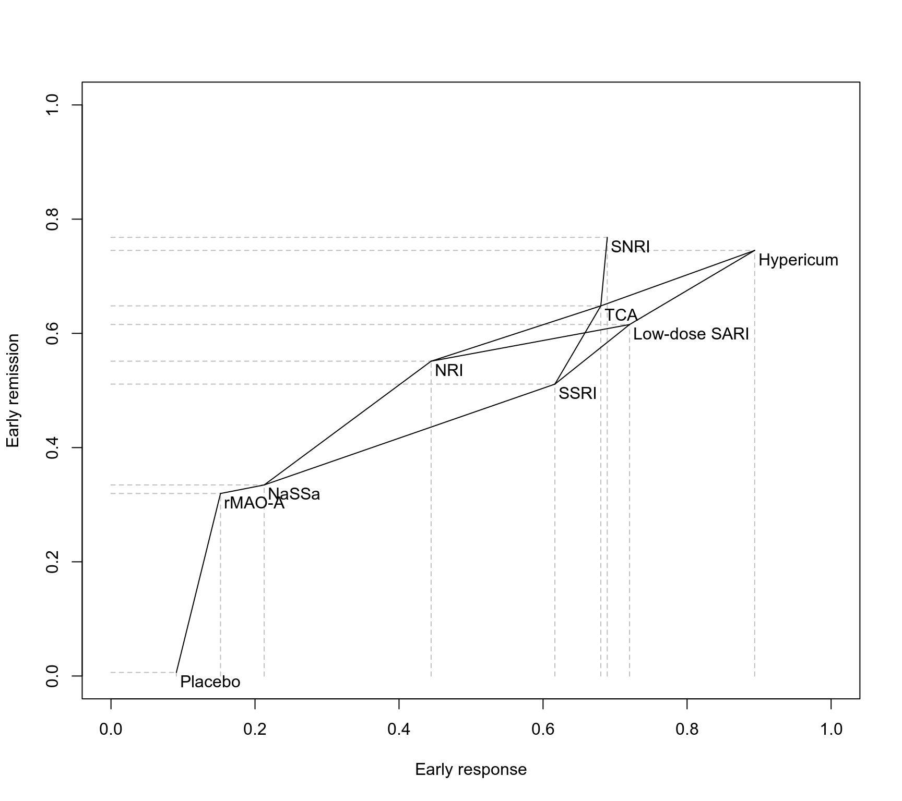

dat.linde2015.RdResults from 66 trials examining eight classes of antidepressants and placebo for the primary care setting.
dat.linde2015The data frame contains the following columns:
| id | integer | study ID |
| author | character | first author |
| year | integer | year of publication |
| treatment1 | character | treatment 1 |
| treatment2 | character | treatment 2 |
| treatment3 | character | treatment 3 |
| n1 | integer | number of patients (arm 1) |
| resp1 | integer | number of early responder (arm 1) |
| remi1 | integer | number of early remissions (arm 1) |
| loss1 | integer | number of patients loss to follow-up (arm 1) |
| loss.ae1 | integer | number of patients loss to follow-up due to adverse events (arm 1) |
| ae1 | integer | number of patients with adverse events (arm 1) |
| n2 | integer | number of patients (arm 2) |
| resp2 | integer | number of early responder (arm 2) |
| remi2 | integer | number of early remissions (arm 2) |
| loss2 | integer | number of patients loss to follow-up (arm 2) |
| loss.ae2 | integer | number of patients loss to follow-up due to adverse events (arm 2) |
| ae2 | integer | number of patients with adverse events (arm 2) |
| n3 | integer | number of patients (arm 3) |
| resp3 | integer | number of early responder (arm 3) |
| remi3 | integer | number of early remissions (arm 3) |
| loss3 | integer | number of patients loss to follow-up (arm 3) |
| loss.ae3 | integer | number of patients loss to follow-up due to adverse events (arm 3) |
| ae3 | integer | number of patients with adverse events (arm 3) |
This dataset comes from a systematic review of 8 pharmacological treatments of depression and placebo in primary care with 66 studies (8 of which were 3-arm studies) including 14,785 patients.
The primary outcome is early response, defined as at least a 50% score reduction on a depression scale after completion of treatment. Secondary outcomes (also measured as dichotomous) were early remission (defined as having a symptom score below a fixed threshold after completion of treatment), lost to follow-up, lost to follow-up due to adverse events, and any adverse event. The odds ratio was used as effect measure.
This dataset was used as an example in Rücker and Schwarzer (2017) who introduced methods to resolve conflicting rankings of outcomes in network meta-analysis.
Linde, K., Kriston, L., Rücker, G., Jamil, S., Schumann, I., Meissner, K., Sigterman, K., & Schneider, A. (2015). Efficacy and acceptability of pharmacological treatments for depressive disorders in primary care: Systematic review and network meta-analysis. Annals of Family Medicine, 13(1), 69–79. https://doi.org/10.1370/afm.1687
Rücker, G., & Schwarzer, G. (2017). Resolve conflicting rankings of outcomes in network meta-analysis: Partial ordering of treatments. Research Synthesis Methods, 8(4), 526–536. https://doi.org/10.1002/jrsm.1270
medicine, psychiatry, odds ratios, network meta-analysis
### Show results from first three studies (including three-arm study
### Lecrubier 1997)
head(dat.linde2015, 3)
#> id author year treatment1 treatment2 treatment3 n1 resp1 remi1 loss1 loss.ae1 ae1 n2
#> 1 1 Lecrubier 1997 TCA SNRI Placebo 75 49 NA 23 10 NA 78
#> 2 4 Blashki 1971 TCA Placebo 35 20 16 8 7 NA 23
#> 3 7 Barge-Schaapveld 2002 TCA Placebo 32 16 9 9 NA NA 31
#> resp2 remi2 loss2 loss.ae2 ae2 n3 resp3 remi3 loss3 loss.ae3 ae3
#> 1 60 NA 23 11 NA 76 48 NA 19 4 NA
#> 2 8 6 5 4 NA NA NA NA NA NA NA
#> 3 12 5 5 NA NA NA NA NA NA NA NA
### Load netmeta package
suppressPackageStartupMessages(library("netmeta"))
### Print odds ratios and confidence limits with two digits
oldset <- settings.meta(digits = 2)
### Change appearance of confidence intervals
cilayout("(", "-")
### Define order of treatments in printouts
trts <- c("TCA", "SSRI", "SNRI", "NRI", "Low-dose SARI",
"NaSSa", "rMAO-A", "Hypericum", "Placebo")
### Transform data from wide arm-based format to contrast-based format
### (outcome: early response). Argument 'sm' has to be used for odds
### ratio as summary measure; by default the risk ratio is used in the
### metabin function called internally.
pw1 <- pairwise(list(treatment1, treatment2, treatment3),
event = list(resp1, resp2, resp3),
n = list(n1, n2, n3),
studlab = id, data = dat.linde2015, sm = "OR")
### Conduct random effects network meta-analysis for primary outcome
### (early response); small number of early responses is bad (argument
### small.values)
net1 <- netmeta(pw1, fixed = FALSE, reference = "Placebo", seq = trts,
small.values = "bad")
#> Warning: Use argument 'common' instead of 'fixed' (deprecated).
#> Warning: Comparisons with missing TE / seTE or zero seTE not considered in network meta-analysis.
#> Comparisons not considered in network meta-analysis:
#> studlab treat1 treat2 TE seTE
#> 14 TCA SSRI NA NA
#> 18 TCA Placebo NA NA
#> 21 TCA rMAO-A NA NA
#> 27 SSRI Placebo NA NA
#> 51 TCA rMAO-A NA NA
#> 130 TCA NaSSa NA NA
#> 130 TCA Placebo NA NA
#> 130 NaSSa Placebo NA NA
#> 131 SSRI SNRI NA NA
#>
net1
#> Number of studies: k = 59
#> Number of pairwise comparisons: m = 73
#> Number of observations: o = 12681
#> Number of treatments: n = 9
#> Number of designs: d = 21
#>
#> Random effects model
#>
#> Treatment estimate (sm = 'OR', comparison: other treatments vs 'Placebo'):
#> OR 95%-CI z p-value
#> TCA 1.72 (1.42-2.09) 5.56 < 0.0001
#> SSRI 1.68 (1.40-2.01) 5.68 < 0.0001
#> SNRI 1.74 (1.25-2.42) 3.27 0.0011
#> NRI 1.42 (0.84-2.40) 1.30 0.1938
#> Low-dose SARI 1.78 (1.18-2.70) 2.73 0.0064
#> NaSSa 1.14 (0.82-1.60) 0.77 0.4399
#> rMAO-A 1.05 (0.69-1.62) 0.24 0.8113
#> Hypericum 1.99 (1.58-2.49) 5.94 < 0.0001
#> Placebo . . . .
#>
#> Quantifying heterogeneity / inconsistency:
#> tau^2 = 0.0352; tau = 0.1875; I^2 = 26.9% (0.0%-47.3%)
#>
#> Tests of heterogeneity (within designs) and inconsistency (between designs):
#> Q d.f. p-value
#> Total 79.37 58 0.0327
#> Within designs 49.41 39 0.1226
#> Between designs 29.95 19 0.0524
#>
#> Details of network meta-analysis methods:
#> - Frequentist graph-theoretical approach
#> - DerSimonian-Laird estimator for tau^2
#> - Calculation of I^2 based on Q
### Random effects NMA for early remission
pw2 <- pairwise(treat = list(treatment1, treatment2, treatment3),
event = list(remi1, remi2, remi3),
n = list(n1, n2, n3),
studlab = id, data = dat.linde2015, sm = "OR")
net2 <- netmeta(pw2, fixed = FALSE,
seq = trts, ref = "Placebo", small.values = "bad")
#> Warning: Use argument 'common' instead of 'fixed' (deprecated).
#> Warning: Comparisons with missing TE / seTE or zero seTE not considered in network meta-analysis.
#> Comparisons not considered in network meta-analysis:
#> studlab treat1 treat2 TE seTE
#> 1 TCA SNRI NA NA
#> 1 TCA Placebo NA NA
#> 1 SNRI Placebo NA NA
#> 11 TCA SSRI NA NA
#> 11 TCA Placebo NA NA
#> 11 SSRI Placebo NA NA
#> 14 TCA SSRI NA NA
#> 18 TCA Placebo NA NA
#> 20 TCA SSRI NA NA
#> 26 SSRI Placebo NA NA
#> 53 SSRI NaSSa NA NA
#> 53 SSRI Placebo NA NA
#> 53 NaSSa Placebo NA NA
#> 56 TCA SSRI NA NA
#> 73 Hypericum Placebo NA NA
#> 90 TCA SSRI NA NA
#> 96 TCA SSRI NA NA
#> 121 Low-dose SARI NaSSa NA NA
#> 130 TCA NaSSa NA NA
#> 130 TCA Placebo NA NA
#> 130 NaSSa Placebo NA NA
#>
net2
#> Number of studies: k = 53
#> Number of pairwise comparisons: m = 61
#> Number of observations: o = 12220
#> Number of treatments: n = 9
#> Number of designs: d = 18
#>
#> Random effects model
#>
#> Treatment estimate (sm = 'OR', comparison: other treatments vs 'Placebo'):
#> OR 95%-CI z p-value
#> TCA 1.92 (1.54-2.41) 5.71 < 0.0001
#> SSRI 1.83 (1.48-2.27) 5.52 < 0.0001
#> SNRI 2.07 (1.51-2.84) 4.49 < 0.0001
#> NRI 1.83 (1.06-3.15) 2.18 0.0289
#> Low-dose SARI 1.91 (1.21-3.01) 2.76 0.0058
#> NaSSa 1.58 (1.02-2.45) 2.03 0.0424
#> rMAO-A 1.57 (1.06-2.33) 2.26 0.0237
#> Hypericum 2.04 (1.58-2.63) 5.43 < 0.0001
#> Placebo . . . .
#>
#> Quantifying heterogeneity / inconsistency:
#> tau^2 = 0.0233; tau = 0.1528; I^2 = 19.3% (0.0%-43.6%)
#>
#> Tests of heterogeneity (within designs) and inconsistency (between designs):
#> Q d.f. p-value
#> Total 60.71 49 0.1218
#> Within designs 36.83 36 0.4303
#> Between designs 23.88 13 0.0323
#>
#> Details of network meta-analysis methods:
#> - Frequentist graph-theoretical approach
#> - DerSimonian-Laird estimator for tau^2
#> - Calculation of I^2 based on Q
### Ranking of treatments
nr1 <- netrank(net1)
nr2 <- netrank(net2)
nr1
#> P-score
#> Hypericum 0.8939
#> Low-dose SARI 0.7201
#> SNRI 0.6892
#> TCA 0.6802
#> SSRI 0.6164
#> NRI 0.4445
#> NaSSa 0.2128
#> rMAO-A 0.1521
#> Placebo 0.0908
nr2
#> P-score
#> SNRI 0.7681
#> Hypericum 0.7453
#> TCA 0.6481
#> Low-dose SARI 0.6155
#> NRI 0.5513
#> SSRI 0.5111
#> NaSSa 0.3346
#> rMAO-A 0.3196
#> Placebo 0.0063
### Partial order of treatment rankings (two outcomes)
outcomes <- c("Early response", "Early remission")
po12 <- netposet(nr1, nr2, outcomes = outcomes)
plot(po12)

### Use previous settings
settings.meta(oldset)